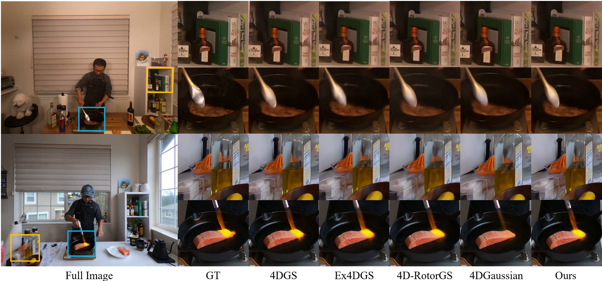
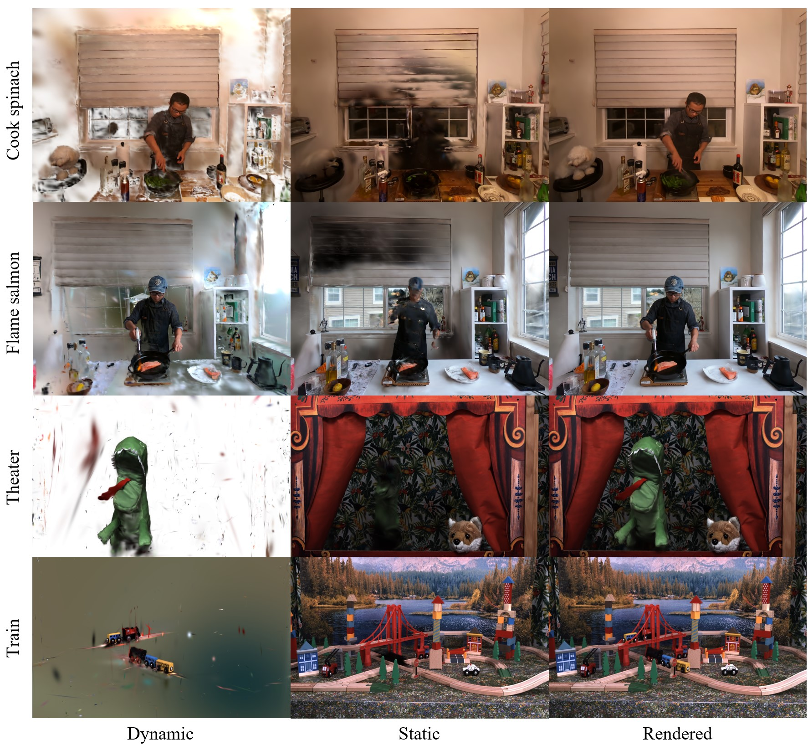

Recent advancements in dynamic 3D scene reconstruction have shown promising results, enabling high-fidelity 3D novel view synthesis with improved temporal consistency. Among these, 4D Gaussian Splatting (4DGS) has emerged as an appealing approach due to its ability to model high-fidelity spatial and temporal variations. However, existing methods suffer from substantial computational and memory overhead due to the redundant allocation of 4D Gaussians to static regions, which can also degrade image quality. In this work, we introduce hybrid 3D–4D Gaussian Splatting (3D-4DGS), a novel framework that adaptively represents static regions with 3D Gaussians while reserving 4D Gaussians for dynamic elements. Our method begins with a fully 4D Gaussian representation and iteratively converts temporally invariant Gaussians into 3D, significantly reducing the number of parameters and improving computational efficiency. Meanwhile, dynamic Gaussians retain their full 4D representation, capturing complex motions with high fidelity. Our approach achieves significantly faster training times compared to baseline 4D Gaussian Splatting methods while maintaining or improving the visual quality.
Our hybrid 3D-4D Gaussian Splatting method converges rapidly by combining the 3D Gaussian optimization process with 4DGS.
(a) 4D Gaussians are optimized over time. Each 4D Gaussian is defined by a spatial center (μx), a temporal coordinate (μt), and a 4×4 rotation matrix that can mix space and time. If its temporal scale exceeds a threshold (τ), we convert it into a static 3D Gaussian by removing the time dimension. In this static case, the rotation matrix simplifies to a purely spatial rotation (R3D), which we encode as a unit quaternion.
In the ideal static case, the 4D rotation matrix is given by:
$$ R_{4D} = \begin{pmatrix} R_{3D} & \mathbf{0} \\ \mathbf{0}^\top & 1 \end{pmatrix} \quad \text{(ideal static case),} $$
Consequently, each static Gaussian is fully specified by its 3D position, rotation, scale, opacity, and color—and remains constant over time. In contrast, dynamic Gaussians retain their full 4D parameterization.
(b) Both 3D and 4D Gaussians are projected into screen space, assigned tile and depth keys, and sorted for rasterization. The rendered image is generated by blending static (3D) and dynamic (4D) Gaussians.
Qualitative comparison
Dynamic vs. Static visualization
_